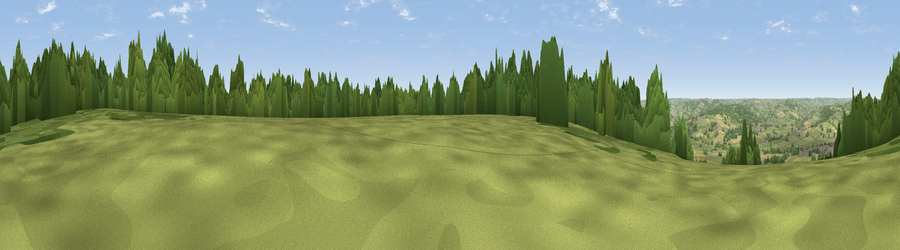

Viewpoint near Axminster
#14803 in England · top 32% of its area beats it · near AxminsterThe view, rendered

A 360° render of this exact spot computed from the terrain model, tree cover and land cover — summer colours, afternoon light, calibrated against photographs of famous viewpoints. Real trees, hedges and buildings will differ in detail.
The panorama
Grey silhouette: terrain skyline in each direction (720 bearings, Earth curvature and refraction included). Dashed green: skyline with trees (+15 m) and buildings (+8 m) as obstacles. Blue strip: how far the ground is visible on each bearing.
Where the view opens
Wedge length = distance to the farthest visible ground on that bearing (vegetation-aware). Rings at 10, 25 and 50 km.
What fills the view
53% grassland · 28% woodland · 12% cropland · 4% water · 3% built-up
Angular shares of the visible panorama (visual magnitude), not map area. Landscape diversity 0.51 (0–1 Shannon).
Key numbers
More beautiful places nearby
The staircase of upgrades: each row has a higher view potential than everything closer. Driving times are estimates from straight-line distance, calibrated against real road routing — check an actual route before setting out.
| Place | Direction | Drive | Score |
|---|---|---|---|
| Viewpoint near Musbury | WSW · 1 km | ~2 min | 59.7 |
| Viewpoint near Hawkchurch | NE · 3 km | ~8 min | 62.0 |
| Viewpoint near Lyme Regis | SSE · 5 km | ~11 min | 79.3 |
| Viewpoint near Lyme Regis | ESE · 5 km | ~11 min | 81.3 |
| Viewpoint near Axmouth | SSW · 6 km | ~14 min | 82.4 |
| Golden Cap | ESE · 11 km | ~20 min | 88.7 |
| The Knoll | ESE · 24 km | ~39 min | 91.0 |
50.75922, -2.98281 · source: screening · position refined by local search. Computed location — check access rights before visiting.